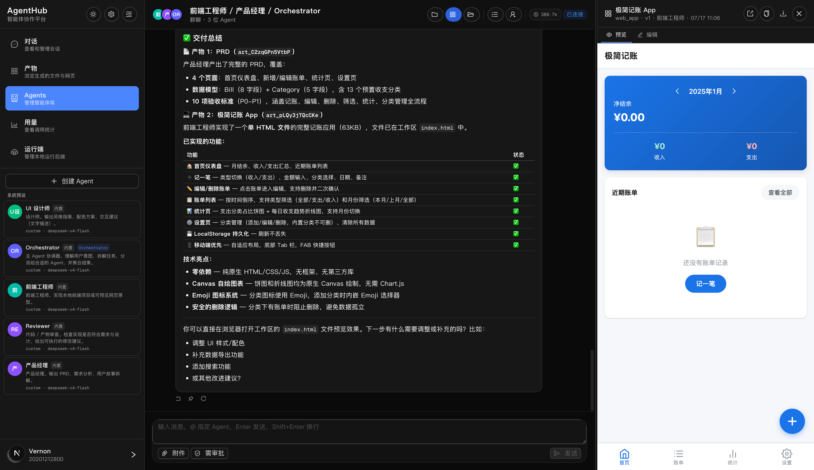
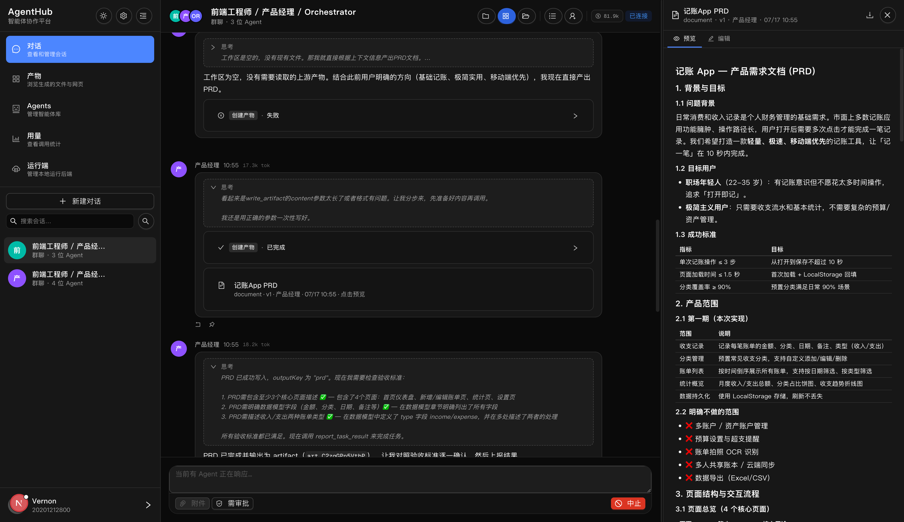
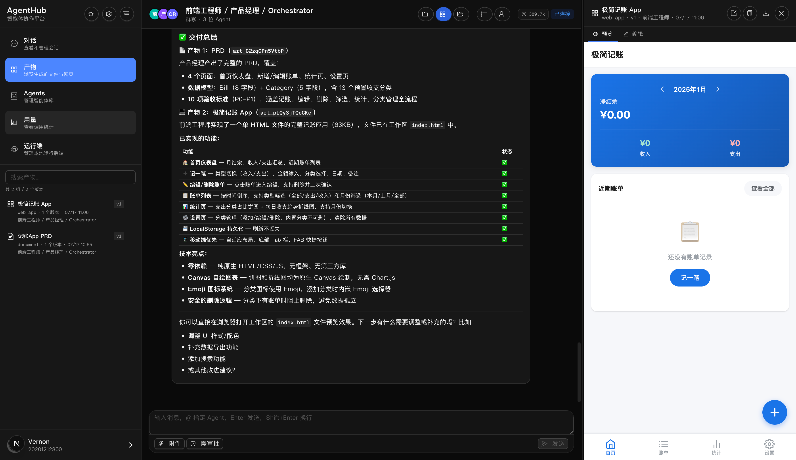

从一段对话开始，把需求、分工、执行和交付放进同一个工作现场。

把真正影响方案的选择摆到桌面上，先对齐“要做成什么”。
每一项工作都有负责人、依赖关系和可检查的交付目标。
聊天、状态与成果都留在同一个会话，成员能看到工作如何往前走。

把平台差异留在适配层，让一次运行从服务端到界面都有清楚的路径。
发送需求查看协作进展
管理一次运行负责路由与生命周期
接入 Claude Code、Codex或自建 Agent
把不同平台输出翻译成统一事件
持久化消息、产物通过 SSE 推给前端
AgentHub 把平台接入、工具调用和文件工作放在同一个会话上下文里。
Claude Code · CodexOpenAI 兼容自建 Agent · Mock
可登记 Daemon；支持 Claude Code、OpenCode 等执行后端。
读写文件、运行命令、读取产物、提出问题、拆解任务。
上下文、文件和产物围绕具体工作组织，多会话可以并行。
文档、网页、代码不是埋在长对话里的文本，而是可预览、可编辑、能继续迭代的产物。

把确认点、执行范围和完成条件做成流程的一部分。
拆分后先审阅；执行、拒绝或用自然语言要求修订。
任务带着验收标准；完成状态要对应可检查的结果。
文件读写与命令在工作区规则内运行，可接入本地环境。
项目按本地形态运行；关键控制点落在计划审批、工作区边界和验收流程里。
让人把注意力放在目标与判断上，让 Agent 在清楚的边界里接力完成工作。